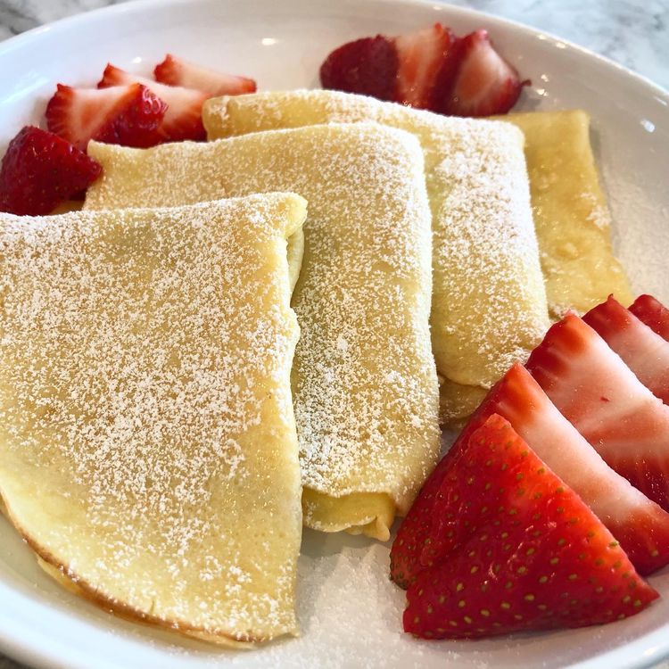

Crepes

Description
simple crepes that can easily be made
Ingredients
- flour
- eggs
- water
- milk
- butter
Steps
- whisk the eggs, water, and milk together
- slowly whisk in the flour and butter
- scoop mixture onto griddle or pan
- cook until lightly browned
- flip and cook until done on other side
- remove from cooking surface, finish with sweet or savory toppings
Home